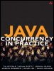

{% include JB/setup %}
{% raw %}
<div>


<table width="627" border="0" cellspacing="0" cellpadding="0" class="calibre5"><tr valign="top" class="calibre6"><td class="v" width="91"></td><td class="v1" height="20"><table cellpadding="0" cellspacing="0" border="0" class="calibre8"><tr class="calibre6"><td colspan="3" class="v2" height="20"><b class="calibre9">Java Concurrency in Practice</b></td></tr><tr class="calibre6"><td colspan="3" class="v2" height="18">By 
											<a target="_new" class="v3">Brian Goetz</a>, <a target="_new" class="v3">Tim Peierls</a>, <a target="_new" class="v3">Joshua Bloch</a>, <a target="_new" class="v3">Joseph Bowbeer</a>, <a target="_new" class="v3">David Holmes</a>, <a target="_new" class="v3">Doug Lea</a></td></tr><tr class="calibre6"><td class="aCells" colspan="3">...............................................</td></tr><tr class="calibre6"><td colspan="3" class="aCells1">Publisher: <b class="calibre9">Addison Wesley Professional</b></td></tr><tr class="calibre6"><td colspan="3" class="aCells1">Pub Date: <b class="calibre9">May 09, 2006</b></td></tr><tr class="calibre6"><td colspan="3" class="aCells1">Print ISBN-10: <b class="calibre9">0-321-34960-1</b></td></tr><tr class="calibre6"><td colspan="3" class="aCells1">Print ISBN-13: <b class="calibre9">978-0-321-34960-6</b></td></tr><tr class="calibre6"><td colspan="3" class="aCells1">
                    Pages: <b class="calibre9">384</b></td></tr><tr class="calibre6"><td class="aCells1"/><td width="75%" colspan="2" class="aCells2"> </td></tr></table></td><td class="calibre10"><br class="calibre11"/><br class="calibre11"/><div class="calibre12"></div></td></tr></table><p class="calibre1"> </p><table width="627" border="0" cellspacing="0" cellpadding="0" class="calibre5"><tr class="calibre6"><td class="aTopMenu"><a title="Table of Contents" href="toc.html" class="aTopMenu1">Table of Contents</a>
												   | <a title="Index" href="index.html" class="aTopMenu1">Index</a></td><td valign="bottom" class="calibre13"/><td valign="bottom" class="calibre13"/></tr></table><table border="0" cellpadding="3" class="calibre5"><tr class="calibre6"><td class="v4" valign="top"></td></tr><tr class="calibre6"><td class="v4" valign="top"><p class="docText">"I was fortunate indeed to have worked with a fantastic team on
the design and implementation of the concurrency features added to
the Java platform in Java 5.0 and Java 6. Now this same team
provides the best explanation yet of these new features, and of
concurrency in general. Concurrency is no longer a subject for
advanced users only. Every Java developer should read this
book."
--Martin Buchholz
JDK Concurrency Czar, Sun Microsystems</p><p class="docText">"For the past 30 years, computer performance has been driven by
Moore's Law; from now on, it will be driven by Amdahl's Law.
Writing code that effectively exploits multiple processors can be
very challenging. <span class="docEmphasis"><span class="docEmphStrong">Java Concurrency in Practice</span></span>
provides you with the concepts and techniques needed to write safe
and scalable Java programs for today's--and
tomorrow's--systems."
--Doron Rajwan
Research Scientist, Intel Corp</p><p class="docText">"This is the book you need if you're writing--or designing, or
debugging, or maintaining, or contemplating--multithreaded Java
programs. If you've ever had to synchronize a method and you
weren't sure why, you owe it to yourself and your users to read
this book, cover to cover."
--Ted Neward
Author of <span class="docEmphasis">Effective Enterprise Java</span></p><p class="docText">"Brian addresses the fundamental issues and complexities of
concurrency with uncommon clarity. This book is a must-read for
anyone who uses threads and cares about performance."
--Kirk Pepperdine
CTO, JavaPerformanceTuning.com</p><p class="docText">"This book covers a very deep and subtle topic in a very clear
and concise way, making it the perfect Java Concurrency reference
manual. Each page is filled with the problems (and solutions!) that
programmers struggle with every day. Effectively exploiting
concurrency is becoming more and more important now that Moore's
Law is delivering more cores but not faster cores, and this book
will show you how to do it."
--Dr. Cliff Click
Senior Software Engineer, Azul Systems</p><p class="docText">"I have a strong interest in concurrency, and have probably
written more thread deadlocks and made more synchronization
mistakes than most programmers. Brian's book is the most readable
on the topic of threading and concurrency in Java, and deals with
this difficult subject with a wonderful hands-on approach. This is
a book I am recommending to all my readers of <span class="docEmphasis">The Java
Specialists' Newsletter</span>, because it is interesting, useful, and
relevant to the problems facing Java developers today."
--Dr. Heinz Kabutz
<span class="docEmphasis">The Java Specialists' Newsletter</span></p><p class="docText">"I've focused a career on simplifying simple problems, but this
book ambitiously and effectively works to simplify a complex but
critical subject: concurrency. <span class="docEmphasis"><span class="docEmphStrong">Java Concurrency in
Practice</span></span> is revolutionary in its approach, smooth and easy
in style, and timely in its delivery--it's destined to be a very
important book."
--Bruce Tate
Author of <span class="docEmphasis">Beyond Java</span></p><p class="docText">"<span class="docEmphStrong"><span class="docEmphasis">Java Concurrency in Practice</span></span> is an invaluable
compilation of threading know-how for Java developers. I found
reading this book intellectually exciting, in part because it is an
excellent introduction to Java's concurrency API, but mostly
because it captures in a thorough and accessible way expert
knowledge on threading not easily found elsewhere."
--Bill Venners
Author of <span class="docEmphasis">Inside the Java Virtual Machine</span></p><p class="docText">Threads are a fundamental part of the Java platform. As
multicore processors become the norm, using concurrency effectively
becomes essential for building high-performance applications. Java
SE 5 and 6 are a huge step forward for the development of
concurrent applications, with improvements to the Java Virtual
Machine to support high-performance, highly scalable concurrent
classes and a rich set of new concurrency building blocks. In
<span class="docEmphasis"><span class="docEmphStrong">Java Concurrency in Practice</span></span>, the creators of these
new facilities explain not only how they work and how to use them,
but also the motivation and design patterns behind them.</p><p class="docText">However, developing, testing, and debugging multithreaded
programs can still be very difficult; it is all too easy to create
concurrent programs that appear to work, but fail when it matters
most: in production, under heavy load. <span class="docEmphStrong"><span class="docEmphasis">Java Concurrency in
Practice</span></span> arms readers with both the theoretical
underpinnings and concrete techniques for building reliable,
scalable, maintainable concurrent applications. Rather than simply
offering an inventory of concurrency APIs and mechanisms, it
provides design rules, patterns, and mental models that make it
easier to build concurrent programs that are both correct and
performant.</p><p class="docText">This book covers:</p><ul class="calibre15"><li class="calibre16"><p class="docText">Basic concepts of concurrency and thread safety</p></li><li class="calibre16"><p class="docText">Techniques for building and composing thread-safe classes</p></li><li class="calibre16"><p class="docText">Using the concurrency building blocks in
java.util.concurrent</p></li><li class="calibre16"><p class="docText">Performance optimization dos and don'ts</p></li><li class="calibre16"><p class="docText">Testing concurrent programs</p></li><li class="calibre16"><p class="docText">Advanced topics such as atomic variables, nonblocking
algorithms, and the Java Memory Model</p></li></ul>
</td></tr></table>
<p class="calibre1"> </p>

</div>

{% endraw %}

